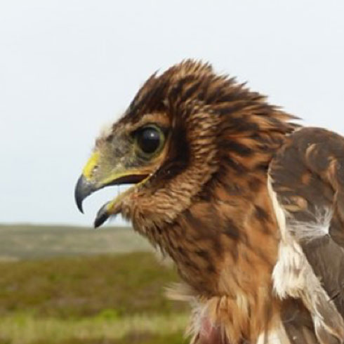
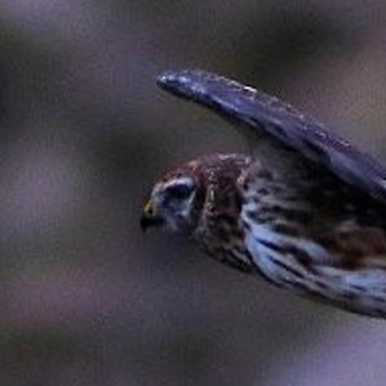
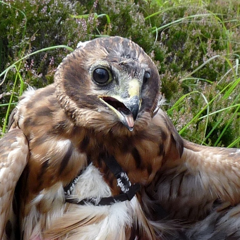

An exciting five year programme of hen harrier conservation.
Working cross-border to secure a future for one of the UK's most beautiful and threatened birds of prey.
Running until 2019, the LIFE project combines satellite tagging, on-the-ground monitoring, nest protection, investigations work, awareness-raising; and working with volunteer raptor field workers, landowners and local communities to protect hen harriers across northern England and southern and eastern Scotland.
About the Project
Hen harriers travel widely so to protect them in one area, we need to protect them wherever they go. Building on existing projects and working with volunteers, landowners, other organisations, and statutory bodies, we aim to create an effective conservation network for hen harriers across the project area.
A key part of the project is the satellite tagging of as many chicks as possible to better understand where they go and identify where they're most at risk. You'll be able to follow online as we track the activities of these fascinating birds.
Working closely with experienced licensed volunteers to monitor hen harriers on the ground, the project is also funding two new full-time Assistant Investigations Officers and providing access to new state-of-the-art technology for remote monitoring and protection.
The project will work with local communities, schools, gamekeeping colleges and landowners across the project area, building on the success of the award-winning Skydancer Project.
Hen Harriers are in trouble
Hen harriers nest on the ground on upland moors. Their diet can include red grouse, which brings them into conflict with intensive grouse rearing for shooting practices.
Hen harriers had been persecuted to extinction as a breeding bird on mainland Britain by 1900, but managed to recover their population naturally. However, ongoing illegal killing and disturbance threatens to drive the birds to the brink once more.
In 2013, hen harriers failed to breed successfully in England for the first time in almost half a century and in Scotland, their numbers fell by 20% between 2004 and 2010.
Tracking the hen harriers
To protect the birds and any nesting attempts during this sensitive time, we won't be updating the maps during the breeding season.
The project covers seven Special Protection Areas (SPAs) designated for breeding hen harriers designated under the European Birds Directive, two in England and five in Scotland, shown here on our map. However, hen harriers travel widely outside the breeding season, so to protect them inside the SPAs, we will also be working outside these protected areas and across northern England, southern and eastern Scotland.
Watch one of nature's most awe-inspiring spectacles — the hen harrier's skydance — and learn more about their behaviours in this short video. Keep your eyes peeled when visiting the British uplands in the spring and you could be lucky enough to see this for yourself.
Skydancer film
Watch the award-winning HLF-funded Skydancer Project film to learn more about hen harriers and the issues surrounding their protection.
Become a Hen Harrier Hero. Activities for Kids!
By learning about hen harriers and persuading others to care about them too, you will be helping us to save these amazing birds of prey!
With 15 fun activities to choose from, will you be a hero or a superhero?
If you think you've seen a hen harrier let us know. Information on the date, time, and location of sighting (grid reference if possible), and a description of the bird will help us to track these elusive birds and inform our conservation work.
This project is 50% funded by the RSPB and 50% through the EU LIFE scheme, which funds conservation and other environmental projects right across Europe.
The SPAs targeted by the project form part of Natura 2000, a network of important sites for wildlife covering the whole of the EU. This network is made up of SPAs for birds and Special Areas of Conservation (SACs) for other species and habitats. These sites are the jewels in the crown' of European nature conservation and are protected under both national and EU law.
Wildlife Success of the Year
The hen harrier was awarded Countryfile's Conservation Success of the Year in February 2016 due to the fact that public awareness of the plight of this bird of prey has increased and its welfare is now in the spotlight.
A profile of Aalin
Aalin was the biggest and strongest of a brood of three chicks to fledge from a nest on the Isle of Man in July 2016. This is the second year in a row that a hen harrier has been satellite tagged by RSPB and Manx BirdLife, after another young female, Hetty, was tagged at a separate location on the Isle of Man, in 2015. Read more about Hetty's story.
A profile of Ada
Ada is a young female who fledged from a nest in the Scottish borders along with her two brothers. We look forward to seeing her journey unfold as she leaves the national nature reserve and heads out into the world.

A profile of Angharad
Angharad is a female bird who fledged from a Welsh nest. We're incredibly grateful to our colleagues and volunteers at RSPB Cymru who kept an eye on the nests for us, as well as the landowners who allowed us access. We hope to understand more about the lives of these birds.
A profile of Apollo
Apollo is a male hen harrier, tagged in the Forest of Bowland, one of 22 chicks to fledge from five nests in this area in 2019. Our team worked round the clock to protect the young birds.

A profile of Arthur
Arthur is a male chick tagged at the National Trust's High Peak Moors. He is named after Arthur Hobhouse, who set out the philosophy behind the system of National Parks of England and Wales. Hobhouse argued that everyone should have access to fresh air and beautiful places. 2019 marks the 70th anniversary of the National Parks and Access to the Countryside Act 1949. Arthur will be monitored in collaboration with raptor workers and the National Trust.
A profile of Beater
Beater was the only surviving hen harrier chick from a nest on land owned by Wildland Ltd on their Glen Feshie, Glen Tromie and Gaick property in the western Cairngorms. Beater was the second hen harrier to be satellite tagged on this estate after another young male, Lad, was tagged and fledged from the same location in 2015. Find out more about Lad's story.
A profile of Bonny
Bonny was the only chick to hatch from a clutch of five eggs on RSPB's Geltsdale reserve in 2016, marking the first successful nest on the reserve in since 2006, and only the second successful nest in the whole of the North Pennines in the last 10 years. Throughout the summer, Bonny's nest was guarded round the clock by a rota of dedicated RSPB staff, volunteers and remote cameras, and supplementary food was provided to make sure he had the best possible chance of survival.
Unusually for a male hen harrier, Bonny remained faithfully close to his nest site after fledging, never venturing further than 10 km or so from our Geltsdale reserve. Sadly, no data has been received from his tag since 14th December and while we have no information to suggest what might have happened to him, we now believe it most likely that Bonny has died.
A profile of Calluna
Calluna is a female hen harrier who fledged from a nest on Mar lodge estate, Aberdeenshire, in July 2017. Owned and managed by the National Trust for Scotland, the estate is heavily used by visitors to the Cairngorms National Park and aims to balance conservation, field sports, and visitor access and enjoyment. Mar Lodge is also home to many other iconic birds of prey including merlins, peregrines, and four pairs of golden eagles.
Over 150 people took part in a Twitter poll run by Mar Lodge Estate @MarLodgeNTS to choose a name for this special bird. Calluna, the Latin name for the type of heather in which hen harriers frequently nest, was the winner by a huge margin with 51% of the vote.
A profile of Carroll
Carroll and her brother fledged from one of two nests on Forestry Commission land in Northumberland in August 2016, two of only three nests in the whole of England this year. Both nests were protected by the Northumberland Hen Harrier Protection Partnership, which includes the Forestry Commission, MOD, Natural England, Northumberland National Park Authority, Northumberland Wildlife Trust, RSPB, Northumbria Police and local raptor workers. One of Carroll's brothers was also satellite-tagged by Natural England. Read more about Nile's story.
A profile of Chance
Chance was a female hen harrier, named by RSPB Scotland, who was tagged in June 2014 by members of the Scottish Raptor Study Group before the Hen Harrier LIFE+ Project began, however the project followed her movements closely. Sadly in May 2016, Chance disappeared in an area of South Lanarkshire, not far from where she was originally tagged. She has not been seen or heard from since.
A profile of Cyan
Cyan is a female bird, tagged in the Forest of Bowland. She and her siblings fledged from the United Utilities estate, who strive to achieve a balance between encouraging public access and protecting water quality, wildlife and habitats. We have been working in successful partnership with UU for years.
A profile of Deecee
DeeCee was one of four chicks to fledge from a hen harrier nest on an estate in Perthshire, in Central Scotland. Alongside her brother and two sisters, DeeCee was carefully monitored and protected in the nest by members of the Scottish Raptor Study Group, with permission and support from the landowner.
A profile of Donald
Donald and his sister Wendy were two of four young to fledge from one of two successful nests at HM Naval Base Clyde's high security Coulport site, which is the storage and loading facility for the UK's Trident nuclear warheads. The security at the base that protects the submarine service also provides a sanctuary for hen harriers and local MoD Police play an active role in monitoring any nesting attempts alongside experienced local raptor workers.
A profile of Elwood
Elwood, was the only chick to fledge from a nest in Banffshire, which was being monitored with help from the landowner under the Partnership for Action against Wildlife Crime in Scotland (PAW Scotland) Heads Up for Harriers scheme. After fledging in the first week of July, he stayed close to the site in the hills above the River Spey until the 20th, when he began to travel more widely. By the 27th, he had moved 20 miles to the south west, and settled in the hills around Tomatin.
Elwood was a male hen harrier from an estate in Banffshire, North Scotland, named by and satellite-tagged by RSPB in June 2016. In August 2016, barely a month after fledging, Elwood suddenly disappeared in an area of managed moorland in the Northern Monadhliaths. He has not been seen or heard from since.
A profile of Eric
Eric is a young male who was one of five chicks to fledge from a nest in the Orphir Hills area of Orkney in July 2017. Eric's nest was monitored and protected by RSPB staff in partnership with local raptor workers. Eric was named by staff at the RSPB in memory of their late friend and colleague Eric Meek, who dedicated his life to studying, monitoring, and protecting the special wildlife and habitats on Orkney including the rare hen harrier.
A profile of Finn
Finn and her three brothers fledged from one of two nests on Forestry Commission land in Northumberland in August 2016, two of only three nests in the whole of England this year. Both nests were protected by the Northumberland Hen Harrier Protection Partnership, which includes the Forestry Commission, MOD, Natural England, Northumberland National Park Authority, Northumberland Wildlife Trust, RSPB, Northumbria Police and local raptor workers. Finn's brother was also satellite-tagged by Natural England. Read more about Nile's story.
A profile of Gryff
Gryff is a male hen harrier who fledged from a nest in North Wales. His name means 'strong' in Welsh.
A profile of Harriet
Harriet was one of four young to fledge from a nest on Mar Lodge Estate, marking the first successful breeding attempt by hen harriers on this estate in living memory. Owned and managed by the National Trust for Scotland, the estate is heavily used by visitors to the Cairngorms National Park and aims to balance conservation, field sports, and visitor access and enjoyment. Mar Lodge is also home to many other iconic birds of prey including merlins, peregrines, and four pairs of golden eagles.
A profile of Heather
Heather is a female harrier who fledged from a nest on community-owned land in Perthshire in June 2017. Her name was chosen by the Trustees of the landholding and she was carefully monitored by members of the Scottish Raptor Study Group. Heather is the second hen harrier to be satellite tagged at this site after DeeCee in 2016. Perthshire is home to the Forest of Clunie Special Protection Area (SPA), which is designated for 20 breeding pairs of hen harriers. In 2015, there were five breeding attempts recorded within the SPA but sadly, only one was successful.

A profile of Hermione
Hermione was one of four young to fledge from a nest on an estate owned and managed by the charity, Highland Renewal, on the Hebridean Isle of Mull in 2016. Hermione's satellite tag was sponsored by the University of Central Lancaster (UCLan), whose researchers have recently developed a forensic DNA identification kit specific to hen harriers, which allows individual birds to be identified from tiny samples of genetic material such as blood or feathers. Find out more about this exciting research.
A profile of Holly
Holly had her first taste of fame when her nest was featured on BBC Scotland's Landward programme in June, in a special feature about hen harriers and persecution. Holly was named after one of the production team. After the glamour of TV, she was given some privacy and the growing brood was watched from further afield.
In mid-October 2015, Holly's satellite tag data suggested she had died in area of upland farmland and forestry to the north east of Glasgow. Despite a thorough search of the area we were unable to locate her body, and therefore do not know the reasons for her death.
A profile of Keen
Keen is a female bird tagged in Perthshire from a nest of three chicks. She is the third bird to be tagged in an area of woodland managed sustainably by the community for the benefit of everyone, after DeeCee in 2016 and Heather in 2017.
A profile of Lia
Lia is a female hen harrier and one of four chicks to fledge from a nest on the National Trust's Ysbyty Estate in North Wales, in July 2017. Her nest was monitored by RSPB staff, with the support of the Trust and their tenant farmers. Lia is the first hen harrier ever to have been satellite tagged in Wales. Lia was named by the local RSPB Officer after his young daughter, who is already a keen birdwatcher.
A profile of Manu
Manu is one of two male hen harriers to fledge from a nest on land owned by Forestry Commission Scotland, in the Scottish Borders,in July 2017. Manu's nest was monitored throughout the summer by Forestry staff and local raptor workers, with support from RSPB.
A profile of Mairie
Mairie was a female hen harrier who fledged on the Hebridean island of Mull in June 2017. She was the second hen harrier to be satellite tagged on Mull by the Hen Harrier LIFE Project, after another female, Hermione, in 2016.
Mairie was named by a private individual who, in the company of many on Mull, kindly donated towards the satellite tagging project.
A profile of Marci
Marci was a female chick and the third bird to be tagged at Mar Lodge, one of several chicks born there in 2018. Harriet and Calluna were also tagged there in 2016 and 2017 respectively.
A profile of Mary
Mary is a female hen harrier who fledged alongside her sister from a nest on the Isle of Man. We're very grateful to the staff at Manx Birdlife and the Isle of Man government for helping to monitor the nest and allowing us to visit it.
A profile of Maye
Maye is a female bird tagged on the Isle of Man. We're worried because the Manx population of hen harriers is declining and we're not sure why. We hope that by tagging Maye and other Manx birds we can better understand what's happening to them and help the government and Manx Birdlife to protect them.
A profile of Marko
Marko is a male hen harrier who fledged from a nest on the National Trust for Scotland's Mar Lodge Estate. This is the fourth summer that we've tagged young birds at Mar Lodge, and we're incredibly grateful for the team's support.
A profile of Nyx
Nyx was tagged in Bowland from a nest of five chicks and is one of 13 birds to successfully fledge in Bowland this year. He is named after Nyx, the shape-shifting water spirit.
A profile of Oscar
Oscar is a male hen harrier who, along with his brother, fledged from a nest that is part of the small hen harrier population remaining in the Scottish borders. We are very grateful to the Lothian & Borders raptor study group who monitored the nest and arranged for us to tag the chicks.
A profile of Rain
Rain was tagged in the Forest of Bowland, and came from a nest of five chicks. She was one of the first hen harrier chicks to be successfully raised in Bowland since 2015.
A profile of Rannoch
Female hen harrier, Rannoch, is one of two chicks to have fledged from a nest on land owned and managed by Forestry Enterprise Scotland (FES), in Perthshire, in July 2017. She was satellite tagged by the RSPB in partnership with local members of the Scottish Raptor Study Group and FES, who together, monitored her nest.
A profile of Sheba
Sheba is a female hen harrier tagged on a privately owned estate in Argyll. It's the first time the landowners have seen hen harriers, and they're just as excited as we are to follow her progress.
A profile of Sirius
Sirius is a male who, alongside his sister, Skylar, was one of three chicks to fledge from a nest in Argyll, on land owned and managed by Forestry Enterprise Scotland (FES) in July 2017. Sirius and his siblings are the first offspring to be produced by our 2016 female, DeeCee, who herself fledged from community-owned land in Perthshire. Skylar's name was chosen as the winner of an online poll run by @RSPB_Skydancer, in which over 450 people took part.
A profile of Saorsa
Female, Saorsa, was one of four chicks to fledge from a nest on a private estate in Ross-shire, in June 2017. Her nest was monitored and protected, with the support of the landowner, as part of the Partnership for Action against Wildlife crime in Scotland (PAW Scotland)'s Heads Up for Harriers scheme. Her name was chosen by the landowner after the Gaelic word for "freedom".
A profile of Skylar
Skylar was a female who, alongside her brother, Sirius, was one of three chicks to fledge from a nest in Argyll, on land owned and managed by Forestry Enterprise Scotland (FES) in July 2017. Skylar and her siblings were the first offspring to be produced by our 2016 female, DeeCee, who herself fledged from community-owned land in Perthshire. Skylar's name was chosen as the winner of an online poll run by @RSPB_Skydancer, in which over 1,600 people took part.
A profile of Thoth
Thoth is a male chick tagged in the Scottish borders in 2018, named after the Egyptian god with the head of an ibis. His tag was sponsored by Scottish Borders Council to learn more about hen harrier movements in the Scottish Borders. Hilma was his sister.
A profile of Tony
Tony is one of three chicks to have fledged from a nest at HM Naval Base Clyde's high security Coulport site in July 2017. The security at the base that protects the submarine service also provides a sanctuary for hen harriers and local MoD Police play an active role in monitoring any nesting attempts alongside experienced local raptor workers. Tony was named by MoD Police Officer John Simpson, in memory of his brother.
A profile of Tornado
Tornado is a young male tagged in Northumberland. He fledged from a nest in a national nature reserve, on land owned and managed by Forestry England. We're very grateful for the support of the Northumberland Hen Harrier Protection Partnership, who helped us to protect and monitor Tornado's nest, particularly those at Forestry England and Natural England.
A profile of Vulcan
Vulcan is a male chick tagged in Northumberland, who came from a nest of five chicks. His father is colour-ringed and is from Langholm. He's a favourite of our project team member Jack, and named after the Roman god of fire.
A profile of Wendy
Wendy and her brother Donald were two of four young to fledge from one of two successful nests at HM Naval Base Clyde's high security Coulport site, which is the storage and loading facility for the UK's Trident nuclear warheads. The security at the base that protects the submarine service also provides a sanctuary for hen harriers and local MoD Police play an active role in monitoring any nesting attempts alongside experienced local raptor workers.